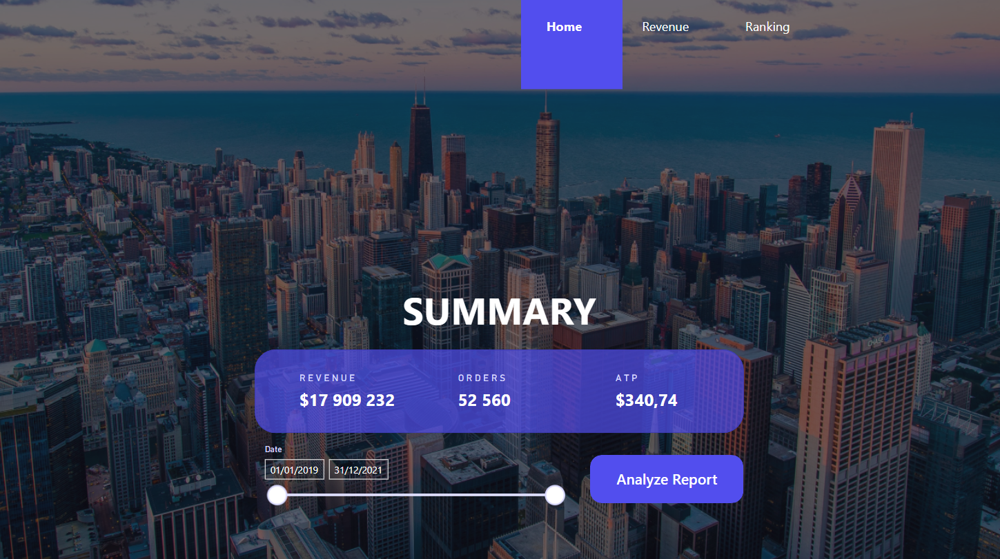

About Me
As a Big Data Professional, I have a strong passion for developing dashboards, reports, data models, and performance-related insights. I am capable of mapping business requirements as a Business Analyst and, as a Data Analyst/Business Intelligence Consultant, translating them into operational dashboards and performance insights.
With my Data Science experience, I can also perform advanced analytics on large data sets. Additionally, automating processes related to data extraction and transformation falls within my expertise.
Databases
- - Microsoft SQL Server, PostgreSQL, MySQL
- - MongoDB, Apache Cassandra
Data Engineering
- - ETL: SSIS, Python
- - Data Transformation: SQL, PySpark
- - Orchestration: Apache Airflow
- - Streaming: Apache Kafka
- - Data Platforms: Databricks
BI & DevOps
- - Microsoft Power BI
- - Version Control: Git, GitHub
- - Containerization: Docker
- - Cloud: Azure
Experiences
Data Engineer
Kilani group | Tunis, Tunisia
- - Developed a medallion architecture for IoT production sensors, from API ingestion to data lake and data warehouse, using Python, MongoDB, Airflow, and Docker.
- - Built real-time dashboards for the RAP solution using PySpark and Kafka.
- - Designed and implemented a 500 GB data warehouse supporting Fatales reporting across multiple business units.
- - Developed machine learning models using deduplication and DBSCAN, reducing Nespresso customer name entries from 30K to 20K.
Data Scientist / Full-Stack Developer
Sofrecom | Tunis, Tunisia
- - Utilized the Intune API to retrieve and manage the status of mobile devices within the company (MDM solution).
- - Designed and developed interactive, real-time dashboards for management, visualizing the live status of all devices.
- - Conducted historical and trend analysis to train predictive models anticipating performance issues, and created an equation to evaluate device repairability.
Data Analyst
LaserSeven | Paris, France
- - Created databases and set up a pipeline from DB to DW (clients, suppliers, and competitors).
- - Developed the estimator’s API (endpoint between Front-End and Back-End).
- - Used the ETL process to create the BI Dashboard.
- - Developed the ”LASERSEVEN” application using Oracle Apex and APP Builder.
- - Audited competitor prices.
BI Consultant
MKAC Expert Firm | Tunis, Tunisia
- - Extracted data on audit missions from African Bank using the web scraping tool Octoparse.
- - Established a potential customer database from the extracted data.
- - Cleaned and prepared data for analysis using Power Query.
- - Participated in setting up Power BI dashboards by defining key performance indicators (KPIs) for the firm’s clients.
Education
Master's in Business Analytics and Data Science
Virtual University of Tunis (UVT)
Master's in Management Control and Business Intelligence
École Supérieure de l'Economie Numérique (ESEN)
Bachelor's in Accounting
Institut Supérieur de Comptabilité et d'Administration des Entreprises
Baccalaureate in Mathematics
Lycée CARTHAGE BYRSA
Certifications

Data Science Projects
Welcome to my portfolio showcasing a collection of supervised machine learning projects. These projects demonstrate my skills in applying data science techniques to real-world problems.
- 1) Heart Disease Prediction: Assessing likelihood based on medical data.
- 2) Loan Prediction: Predicting loan counts based on financial details.
- 3) Vehicle Price Prediction: Regression model for vehicle valuation.
- 4) Battery Consumption Prediction: Forecasting battery usage patterns.
Business Intelligence Projects
Explore my Business Intelligence (BI) projects where I apply SQL, Power BI, and DAX to develop actionable insights.
- 1) Real-Time Sales Dashboard: Dynamic metrics for business performance tracking.
- 2) Data Scraping: Processing online data to inform strategic decision-making.
